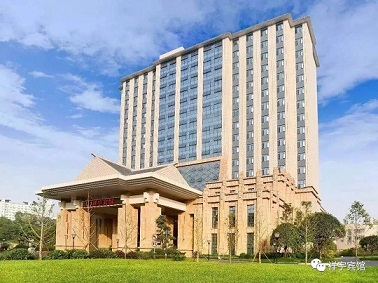
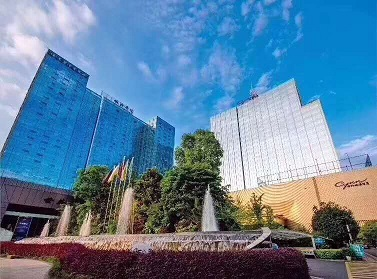
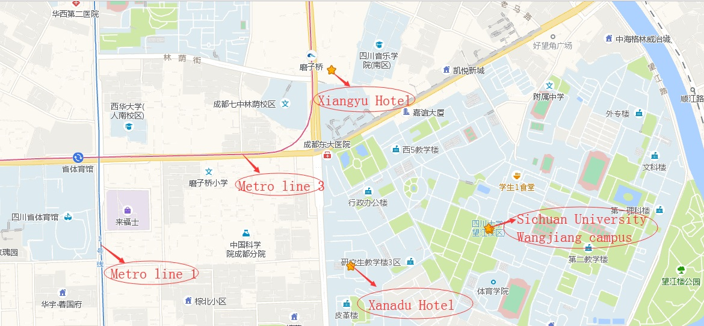

Conference Venue

IWDW 2019 will be held at Xiangyu Hotel (祥宇宾馆), Chengdu, which is close to the Wangjiang Campus, Sichuan University. The address for Xiangyu Hotel is as follows.
- In English: No. 103 Xinnan Road, Wuhou Zone, Chengdu.
- In Chiness: 成都市武侯区新南路103号
- Tel: +86-28-85551111
Accommodation

There are two accommodations for IWDW 2019: Xiangyu Hotel (Chinese only) and Xanadu Hotel (世外桃源酒店). Xanadu Hotel is about 800 meters away from Xiangyu Hotel. The address for Xanadu Hotel is as follows.
- In English: No. 69, Kehua North Road, Wuhou Zone, Chengdu.
- In Chinese: 成都市武侯区科华北路69号
- Tel: +86-28-85589999
Reservation Form Download
Transportation
